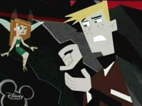

(日記とか言うモノ)
忍者カメサイト「FREAK★freak」さんの5月30日の日記〜〜！
パワパフ忍者タートルズ！
いやーんラブリー。昨日へたばってたので見逃してたよ。
レオ＝ブロ、マイキー＝バブ、ラフ＝バタカ な感じでしょうか？ドナテロは・・・(笑)
調子悪かったのですが、抜けられらない打ち合わせがあったので、やっぱり仕事に。
「体は大切にしなきゃいけないよ、ゆっくり養生したまえ。あ、でもこのあいだの件はちゃんと期日どうりにあげてね。」
という感じなので、体調崩したら損こくのは自分だけ。マジで体だけは注意しないとなー。
どうやら熱も出てたので、さすがに今日は早退。ムリヤリ早退。自分を守るのは自分だけ。その分明日はつらいなー。
とか言っときながら、せっかくだからとブリスターに寄ってアメコミを買いにゆくバカひとり。
TeenTitansGo!#7買った〜！！お姉さま〜！！
今回はお姉さま最初から最後まで出まくりの暴れまくりの、みっちりお姉さま号でした。大満足。
チビ姉さまも出まくり。
なんかTodd Nauckさん、「なんだよー、どいつもこいつもオリジナルに似せようって思ってないのかよ！ちきしょう俺だって〜」と思ったかは定かではないですが、だんだん自分なりのTT絵になってきてるような気がしないでもないです。
しかし、ブリスターでは私が買ったら残り1冊。TeenTitansGo!#7もパワパフ#50並に売れまくってるんですか？！速攻完売の予感。アメコミってこんなに売れまくるものだったっけ？
一緒に買ったHarley & Ivy#2はまだまだいっぱい残ってるというのに・・・TTG#7売れすぎ！
Harley & Ivyもおもしろかった〜。
いきなりアイビーの下着姿＆大股開きで始まるなんて、このシリーズはサービスカット多すぎです。しかもドロレスまで・・・なんてマニアックな。
うーん、それにしてもハーレィとバブルスって似てるよなあ。どこが、と言われても困るが、とにかくイメージがかぶるんだよね。なきべそかくハーレィはバブルスぽかったか？
最後にバットマンも顔を出すんですが、どう見ても悪役(笑)
さらにもう一冊。CartoonCartoons#30。今回はKNDとジョニーブラボーとデクスター。
コミック版のKNDはけっこういいんだよね。あ、KNDもナンバー5のお姉さま話だ！今月は「お姉さま月」なのか？
しかし、同時収録のデクスターのコミックはヒドイな・・・今まで見てきたデクスターコミックの中でもかなりショボイ。こんな大味でどうでもいい作画は初めて見た。

あまりといえばあまりの塗り間違い。
PpG#50も塗り間違いはけっこう酷かったけど・・・
カラリストの方！もっとしっかり仕事してくださいよ、ホント。
あ、ディーディーも「お姉さま」か(笑)
急に暑くなったせいか体調を崩してしまいました。
頭がガンガンするよー。うにゃー。
PpG
COMIX VOTE なんか思ってたより投稿あって、ちょっと嬉しい。
アニメのほうならともかく、コミック買ってる人なんて圧倒的に少ないだろうし、そこから投稿までしてるれる人の割合を考えると10人くらい？（苦笑）、なんて思ってたんだが・・・
コミックはいつも自分の好みで評価しちゃってるので、他の人はどう思ってるのかな〜と、前々から思ってました。一言感想だけど、いろんな意見があってオモロイネ。
・・・ううう、今はこれがせいいっぱい。頭いてー。
広告スパムメールがうっとおしいので、メアドのリンクをエンティティ化してみる。
今更遅いかもしれないけど、なんか効果があった！みたいな評判もあるし。
ぶっちゃけメアドを書かないって方法もあるんだけど、掲示板には書かなくてもメールはくれる、という人もけっこういるし、なによりこの方法のほうがなんかカッコいいから。
ブラウザで見る分にはいままでとナニも変わりはないけど、ソース見ると意味のないような文字の羅列にしかみえない。ちゃんとアクセスしてくれる人には「問題なくて」、プログラムで自動収集してるようなクズ野郎にはバッチリというすばらしいしろものだ。理屈はよくわからなかったけど。まあ、これがものすごく普及してくればスパム側も対策してくるだろうけど、まだまだマイナーだと思うし、そんなこと対策しなくても収集できるとこは星の数ほど残ってるだろうから、しばらくは安泰だろう（と、思う）
そーいえば、仕事でwebのデザインのアイディアを出してくれって言われて手を貸したことがあったけど、私のやつはイマイチ評判が悪かった。ガクー。
なんか斬新でクールなモノってやつを期待していたらしい。一応それなりには考えていたんだけど、知らず知らずのうちに・・・
「実際に制作可能なデザイン」の範疇で考えていたっぽい。
しかも、より自己分析してみると、「なるべく更新のしやすい」「サイトの構造が分かりやすい」「あとで修正あっても直しやすい」とか無意識に考えていったっぽいですね。自分でwebサイトとか持ってると逆に発想を制限しちゃうものなのかも、とか思った。いかんですね。
でも、評判のよかった別のデザイン、あれはどうやってコーディングするんだろうか？と一人心の中で思ってたけど・・・。よくよく考えたら、どいつもこいつも自分でホームページとか作ったことないやつばかり。なるほど、そういう方が自由な発想ができるものなのかも。
でも、ホントにどーすんだろアレ？全ページFlash?いや、それでも無理だろ。専用ブラウザでも開発するつもりだろうか。ま、どっちみちあんなサイトがあったら、見にゆくのめんどくせえなあ・・とかも思った。（更新するほうもめんどくさそうだなあ）まあ、その後どうなったか知らないからいいんだけどさ。
お口直しに、ドラゴンボール占いとかしてみる。
ベジータ様でした〜〜！
そうですよ〜見て無いとこで努力しとるんですよ！でも、人の意見にゃ聞く耳もたんのですよ！
でもきっと天然にスゴイやつには永久に勝てんのだろうなあ・・
・・・・・あってるかどうかはともかく(笑) ちと嬉しい。そんだけ。
と、ここまで書いてたら、なんかパワパフ新作が秋にも公開って情報が！
わーーーーい。
いやあ、絶対今年中にもう一回やるんじゃないかとは思ってたけど、ハッキリ予定がわかるとスッキリして気持ちがいいものです。
ティーンエイジロボットも順調にいけば秋公開なんで、今年の秋は充実してんなあ。今度こそダイナモ！
ニンジャハイスクールというアメコミをご存じだろうか。
最近のアメコミは日本の漫画やアニメやゲームに影響うけまくりなんて話はよく聞くかと思うが、最近どころかずっと前から、「悪」影響というか、もうそのまんまというか、そのまんまというよりかなり偏ってるというか、ていうかこれ同人誌？な感じの作品を量産してきた、極ヲタアメコミ出版社Antarctic
Press。
その看板作品こそが、このNinja
High School（最近NHSとして新シリーズになった）なのである。（Gold
Diggerもスゴイが）
パロディとかそんなものを突き抜けて、そのまんまちゅうか、そんな感じなのはカバーアートを見れば一目瞭然なんですが、ま、それはともかく。
ここで注目したいのは、#102です。
パワパフがー！！！！！
ていうか、モジョが！ジャックが！デクスターが！あとコンボイやら悪魔博士やらも！（こっそりとスーパーサイヤ人も）
マイナー出版社だけに、や り ほ う だ い ですな(笑)
ところで、アメコミ入荷のフライトの遅れのせいで、今週はアメコミ屋各店でいろいろと入荷されとりませんでしたな。TeenTitans Go!は今週はブラックファイヤー話だったので、張り切って買いに行ったらないでやんの。もちろん再入荷予定のPpG#50も未入荷でした。んが。
なんか寂しいので、ちらりとノーマル版のTeenTitansのコミックでも立ち読みしました。
ビーストボーイちょっと男前。スターファイヤー、腹筋われわれでマッチョマッチョ。
で、レイヴン・・・・・フードをはずすと・・・
ハゲだったーーーーーーーーーーーー！
えええ？もともとはそういう設定なの？それともこの回だけなんかの事情で？
なんかショックだった今日の夜。ボクチン、アニメ版のファンでよかったかも〜。

レイヴンといえば、TeenTitans Go!を買ってちょっとよかったこといえば、レイヴンの呪文のスペルがわかったことですな。
「AZRATH METRION ZINTHOS」
私の英語耳では「アズラス マテリオン ジントス！」って聞こえてたんだけど、それほど間違ってなかったかな？正確にはジンソスなのでしょうか？
忙しくなると、無性に「旨いもの」が食べたくなります。
つーか、これで過労死して、最後に食べたのがしょぼい飯だったなんてことを想像すると、もう侘びしくて侘びしくて泣けてきます。
だから、このあいだなんかドアホウがチャイナクイックなんて頼みやがったのにはムチャ腹たちましたよ。特にプラスチックの安っぽい器とか何とかして欲しい。それでいいお値段とりやがるんだからわびしさ倍増。
だから今日は寿司を食いました。ほんとはウナギ食べたかったんだけど、まあ寿司でもウナギあるしな。回転寿司なんだけど、むちゃくちゃ旨いとこ発見。しかも一皿100円と安いし。調子に乗って16皿ペロリ。・・・結果はあんまし安くならんかった・・・けど、この味なら大満足。またいこう。
あと、ストレスたまると漫画も読みたくなる。（逃避かも）
で、また漫画を購入。
「パタリロ西遊記8巻」「ゾンビ屋れい子11巻」「エロイカより愛をこめて30巻」
奇遇なことにどれも最終巻だったり、エピソード最終話だったりとあとくされない巻ばかり。
やっぱり魔夜峰央はおもろいなー。
ゾンビ屋は掘り出し物だっただけに、終わっちゃうのは寂しいけど、このくらいで終わらせるのがいいのかも。テンポと凝縮率がすさまじいのでやっぱこのくらいなんだろう。これがジャンプ漫画だったら30巻分くらいにはなってたろうに。
エロイカはあいかわらず。少佐〜〜！
なんか知らない間にやじきたまで復活してたんですね。これだから少女漫画のペースはつかみにくい。これはもう少したまってから手をだそう。
それにつけても、改めて思うに、やっぱり日本の漫画って安いよな〜〜。
で、
なんか選考のジャンルの幅が広くていいなあ。紙魚子とかビーカー教授とか。
メガネ野郎がいっぱい登場するヘルシングも早く次の巻がでないものか。
更新のネタはたまってるんだけど、忙しくてしばらく無理そう。うーん旬を逃しそうだなあ。
最近気になってる日本のアニメ。
いや、まだ見たことないんだけどね。
んーと、実はこれについての記事を読んだんですが、このアニメ、日本では珍しくアクターレコーディングで制作されているらしいのですよ。
アクターレコーディングとは、先に声優が音を入れて、それに合わせて動画を制作してゆくやり方。そう、海外アニメ、カートゥーンなどが採用しているやつ。日本じゃすでにできあがった動画に音を合わせてゆく方式なんですよね、普通は。すげー珍しいじゃないですか。どんな感じに仕上がってるんだろ？
リップシンクしてるのかな？（でも日本語じゃ唇や舌の動きに乏しいから、あまり変わりはなかったりして・・）
制作者の話によると、どうしても絵に音を合わせる方式だと、ちょっとテンポが遅くなるけど、先に音を入れるとテンポよく進むらしいです。まさか、日本と海外もののテンポの違いってのは、そういう制作方式の違いから来てるんだろうか？と、興味深い。
ゼイラムもミカヅキもわりかし面白かったし、雨宮慶太ならちょっと見てみようかなとも思った。きっと、クリーチャーもいっぱいでそうだしな。
あと、魔法少女というと日本では「変身もの」の亜流みたいな感じだけど、こちらはどうもホンモノの「魔女」っぽいし。そのへんの匂いも海外ものっぽい感じがして気になるのです。
って、あれあれあれ・・・・
こいつら、もしかしてパワーパフガールズですかぁぁ？？？
ほら、あれがブロッサムで、あれがバブルスで、あれがバターカップ。
髪型とか、髪の色とか・・・ふんがーーーーー。
三人娘と聞くと、なんでもかんでもパワパフにだぶらせてしまう、オバカな人手をあげてー
( ･∀･)ノ はーーーーーーーい！
めちゃめちゃ忙しいです。6月は特に恐ろしいまでの予定が・・・パワパフ新作スペシャル、リアルタイムで見れるか不安になってきた。
おかげでネットサーフィンもちょっとペースおちぎみです。まわりそびれて旬な話題に乗り遅れると、ちょい書き込みずらくなってしまうのが残念なとこ。
リンク先とかが突然消えちゃうと、「うわあああ」って感じになってしばらく様子を見るんですが、かといってデットリンクなのにそのまま放置してるのは、逆に「リンクしたくせにちっとも見てない」な感じで失礼にあたるんじゃないかと思って、機会があるとリンクからはずすんですが、追加の時と違って削除するときってやっぱり抵抗あるんですよね。うむむむ。
でもちゃんとそのアドレスはブックマークしてるんですよ。
もしや・・・と思う時が多々あるもので。で、やっぱり・・・・復活してたーー。うれしい。
でも、そういうサイト様ってリンクするのって迷惑なのかもしれない・・と悩む時があります。人の心はよくわからないです。自分の心もよくわからないけど。
いいや、リンクしちゃえ。 こっそりと。それが私の「気持ち」です。
で、全然関係ないんだども、漫画を買いました。
アメコミもいいけど、疲れてる時にはハードル高いです。気楽に日本の漫画を無性に読みたくなることだってあるのさ。とかいって、いつも読んでるけど。
最近めっちゃ気になってるのはジャンプのデスノート。くああ、おもしろいねえ。物語の構造上、どう考えてもキラの破滅で終わるとしか思えないんですが、どうしてもキラの方に感情移入してしまう。「やばいよ、やばいよ、もっとおとなしくしてたほうがいいよキラ」てな感じに。この引き込む力はすごいものだ。最初はもっと地味な話になるかと思ってたけど、Lが出てきてから動きがハデに。この心理戦の駆け引きがたまんねえ。ところで、この人の描くジーンズのお尻はたまらんですな。あ、でも最近リュークの出番が少ない・・・
と、こんなこと書いときながら、買ったのは「デスノート」ではなく、「沈夫人の料理人」だったり。
やっぱ、おもしれえ。李三のウジウジぶりがいじらしくて、たまらんのですよ。感動すら覚える。
ああ、旨いものたべてえ。
コミック＃50はなんとか入手できました。
最初ブリスターよったらすでに売り切れで、ものすごく焦りましたよ。
あわてて渋谷のTHE COMIX（まんがの森）へ。
一冊だけのこってた！
あぶねえええ。
今回、発売3日で完売かよ！＃49のアメーバ話の回なんかまだ残ってるってのに！
今回に限って、みんななんで買うんだよ！もう！
ありえなーい。
けっこう売れるかなあ・・・なんて思ってたけどこれほどまでとは思わなんだ。これだから、アメコミの入荷数の調整って難しいんだなと思った。販売店さまご苦労様です。
さて、アメコミレビューが先か着ぐるみショーレビューが先か、はたまた、たまってる同人誌レビューが先か悩ましい。こんな日記書いてるヒマがあったら、どれかでも少しずつ進められるに違いないんだが、どうもコンテンツ系はとっかかりのレベルが高いのですよ。
日記とかBBSとかはとっかかりレベルが低くて、気楽に始められる。どうしても人間楽なほうへ〜。
まあ、勘弁してくらさい。これは私のストレス発散の場でもあったりしますんで。
（逃避の場ともいう）
とかなんとかやってると、ラクガキとかもしたくなって・・・
オフ会マンガとかテキトウに描いてたりします。
ぶっちゃけ内輪マンガなんですが、こういうのって知らない人が見てもおもしろいのかなあ？
別にいいか。自分が楽しければ。
オフ会では何回かあったことのある「こけし企画」のこけし社長。パワパフショーオフでもお会いしました。この人ローカルネタとかヘンなものとか好きなんだよなあ。まさに、時間を無駄にしてる生き方。すばらしい。姉弟でサイト運営してるらしいです。デクスター一家かよ。と、カートゥーン的につっこんでみる。
マンガ描くたびに敵を作ってるような気がするのは気のせいですか？
あいかわらず記憶絵なんで色々間違ってたり、服とか髪とか違ってたりするのは勘弁してください。て、いうかもう全然覚えてません。特に「会長」様はメガネしか覚えてません。いいんです。マンガなんか記号ですよ。知らない人にはバレないし。と、調子にのってこけしマンガもう一本。

ところで、こういう風に実際の人物を（かなりねじまげて）勝手にキャラ化してもよいものなんでしょーか？いまのとこ、怒られてないからいーかな。
あ、でもそーいえばjacklinさんが・・・

今日はまたもやパワパフショーにいってまいりました。
今回は一緒に見に行ってくれる人がいっぱいいて嬉しかったですよ！
５！のヒタキさんや黒イルカさんをはじめとして総勢9人。うわ、なぜかこんな人数に。
むう、冷静に考えたらなんかエエ歳した連中がたむろって子供用ショーの見学ですか。イタイ集団な気も。
レビューまた書こうかと思ったけど、さすがにもう書くことないかも。
時間があったら書くかもしれませんが、さすがにショー紹介ではなく、たんなるイベントレポート。でも、 会場でPpG新作用CMを見れたり、メイシーやシンプソンズの着ぐるみを見たりとけっこうショー以外がおもろかったので、そのあたりの話になるかも。
そういや、パワパフのスウォッチの現物もう発売されてました。時計屋よったら入荷してるよ！
この中ではバブルスが好み。
なぜか（当然かともいう）デクスターモデルはまったく見あたりませんでした。
さすがに買わなかったけど。
でも、大宮の豆魚雷にはシャカシャカスイングのガチャガチャが入荷してたんで、回してきました。
3回やって3回ともダブリなしの好成績。運気上昇中。パワパフ神降臨か。
あまりの調子良さにそこでやめました。いいとこで切り上げる。これギャンブルの掟。ウラ〜。
（ヒタキさんはめちゃ熱くなって何回も回してたような・・・・）
むう、なんか他にもいろいろ書きたいことあるけど時間ないな。別の機会にでも。
と、いうことでオマケ画像。
黒イルカさんの「記憶だけで描いたガストリー少佐博士」

ふふふふ、なんか好み。
ていうか、眼鏡ならなんでもいいんか＞ワシ
あ、そうそう。コミック＃50見ました。思ってたよりかわいかった。プルトニウム博士かっこよかった。（アイパッチがツボ）。共作らしくフィルモイ絵パフとクック絵パフが入り交じってますね。パラパラ見ただけですが、もっとボリュームあっても良かったんじゃないかと思った。前後編にするとかさ。
ちなみに、ワタシはまだ入手してません。
KOHさんがブリスターで買ってきたのを見せてもらったのです。
土日の開店時間11時に（正確にはその3分前？）ブリスターにて強奪。その後12時待ち合わせの「さいたま新都心駅」に到着。という荒技をしてのけたようです。
見た目は好青年なのに、なにげにこの人も狂ってきたとか思ったのは内緒だ。
今日は日本でのPpGコミック＃50の発売日。くううう、買ってきたかったけど、やっぱり店が開いてる時間には帰ることもままならず、残念至極。ていうか、昨日は帰ることすらできんかったので、まあ良しとするか。ココ最近当たり前ののように土日も仕事・・・もちろん今回もそうさ！でも、土曜はムリヤリ休みにしたさ！ええ、するともさ！ しかし、こんだけやってもコンペで落ちればムダ仕事なんだから、世の中なかなかキビシイよなあ。シクシク。（今日、あそこのコンペは大手の持ち回り順・・なんてイヤな話聞いちゃったのでテンション落ちまくり）
はっ、かわいそぶってますか、ワタシ。（by かってに改蔵）
気をとりなおしてCNの6月のスケジュールを覗いてみると・・・
うふふふ、間違いなくパワパフ新作。
ん？
スペシャル終了後は、スペシャルのリピート・・・
うわーーん！やっぱり8話だけかよ今回！
予想どおりRRB復活のエピ直前で打ち止め。大人ガールズもダメですた〜。
うわああん。もっと見たいよ見たいよ見たいよ。
前に、新作は小出しでいいから、とか言っときながら、矛盾してますか。ええ、してますとも。一貫性なんか全然ありませんとも。
ファンのどん欲な心理ってのはこんなもんだ。（おまえだけだ、というツッコミには聞く耳もたない）
くすんくすん。いいです。新作見れただけでもラッキーなんだから・・と自分説得中。
ん？あれあれ？
ビリマンまたもや復活ならずかよ〜〜！！こっそりエドエッド復活してるし。
うーん、ちょっとマンディエキスが切れかけているので、少し苦しい。（ビデオで見るのと、放送されてるってのではこうも感触が違うものか）
とりあえず、必ず「冬来スペシャル」やらぬと承知ぜんですぞCN。
あ、どっからか「新作やるだけましだよ〜〜〜」という亡者の声が。
てなわけで、昨日カミングアウトしたついで。
エイリアスやらダーマなんかも見てたりします。
エイリアス、いまんとこそれほどピンとはこないんだけど、テンポはいいです。さすが洋もの。
今日の秘密兵器は〜なんてあって、トータリースパイズかと思った！
ロシアのライバル女スパイとアクションしまくりで、キム・ポッシブルかと思った！
こうやってカートゥーンを引き合いにだすとこが、ちょっとアイタタかしら。
ただ、恋愛パートはいらない。
まあ、向こうの特質として「なんでもかんでも詰め込もう」的なとこはあるんでしょうな。この濃密さに慣れちゃうと、日本のものはちょっと薄く感じたりもするんですが。
こうしてみると、日本ってアクションもののドラマってかなり少ないよなあ・・・アクションできる俳優がいないってことかしらん。それともアクションは完全に特撮にまかせっきりで、そもそもやる気がないってことかな？
で、エイリアス。
主人公のねーちゃんが、もうちょっとばかしキュートだったらなあ。。。
（ダーマはやっぱりかわいいな）
あちらのモノって第2シーズンがおもしろいことが多いから、第一シーズンは、まあこんなものか？
それはカートゥーンも同じと、最近思う。カートゥーンって、けっこう第一回目ってのはそれほどでもなくて、だんだん尻上がりに弾けてくることが多くないですか？
パワパフも初回はそうでもないけど、第二シーズンは「うそつき」やら「モジョバブ」やら「雨の日」やらあるし。ホムビも、JLも、キムも、第二のほうが好きだし。ビーストウォーズもメタルスのほうが・・・
・・・問題は第三シーズンでどうなるかだ・・・あえて例は出さないが。
さて、そろそろ借りたプリキュアでも見ないとまずいよな。もうじき返さなきゃいかんし。
はあ、時間が・・・
最近はちょっとカートゥーンもご無沙汰ぎみ。いろんなやつがリピートに入ったってこともあるけど、今「日本映画専門チャンネル」でトリックやってるんですよ。
つい、ふらっと見始めたら、CSなものでCMが無い上に、そのまま後編も一挙に放送したりするもんだから・・・気が付いたら全部みてるハメに。やっぱオモロイよ。
特に「ゾーン」の話はシリーズ中最高傑作だと思う。
あと、ジロとかもあるし、プリズナーNO.6も見やすいイイ時間帯になってたりするものだから・・・と、実は最近実写系のほうを見ることが多かったりして。
そんな風に時間をやりくりしてるときに限って、お絵かきとか無性にしてみたくなったりするのは不思議なものです。でもサラサラっと描ける人でもないので、天然オエカキストさんたちのようにはいきませんが。
だから、人の絵をみて癒してもらいます。
今日は、ねこみそさんとこの水着ジンクスゲット〜！ 、

今週末はいよいよ#50ですな。
なんだかクックさんもえらい気合いが入っているようで、CNがPowerpunksGirlsを承諾しさえすればなんとか・・とか言ってますな。もう一度描くのか、アニメにフィードバックするのかそのへんよく分からんけど。CNの承諾が・・とか言ってるから、アニメに登場する可能性も・・って話かしらん。
(σ´∀`)σ ｿﾚｲｲ !
今からあーだこうだ言ってもなんの意味もないPpG新作のエピソード数。
わかっちゃいても、どーしてもあーだこうだと考えちゃうねえ。
マジに今回8話っきりの公開だったら、Octi Goneとか入ってる分だけ話数が喰われちゃうわけで、そうなるとRRB復活話とか、ティーンPpG話とか、ダイナモ復活とかのやつが見れんわけですよ。ええええ。
はふう、気になるぅ。
それとも、一度に公開しちゃうのはもったいないからってことで、残りの新作は・・・
「冬来（ふゆこい）スペシャル」
ってのを予定してたりして〜。
大晦日に48時間パワパフマラソン！旧作新作見せます超パワパフスペシャル！でもって、途中にはさむミニ番組も全部パワパフ関連。うわー、すげー！・・と、ちょっと妄想したけど、あまりにキツすぎてイヤになってきた。なんか一気にやるより、ほそぼそと週1ペースでまったりゆったり細く長くやってくれるといいなあ。
あれですよ、パワパフ新作枠というのを用意して、その週はぜんぶ同じ新作話をやるってのはどう？
これならビデオミスしたり都合が悪くて見逃したりしても、次の日や別の日に捕獲できるからグッドではないでしょーーかあ。
ここまで待った分だけ、逆に細く長く楽しみたいって気も。2年以上の鬱積した月日が数日で終わっちゃうのは、なんか悲しい。
ところで、エピソードといえば・・・
第5シーズン、第5シーズンって言ってるけど、アメリカでやってないのに他国やイベントで放送されちゃった話とかのあつかいが微妙みたいで・・・
例えば、ここなんか
Nothin' Specialなどを第6シーズンってことにしちゃってます！（これは願望も混じってるのかもしれないけど・・「次こそ放送するんだ〜」みたいな）
うわーい、日本でエピソードリスト作るときややこしくなりそーう。
ようやく今週の仕事が終わった・・って、明日は月曜ではないですか。意味ないじゃーん。
でもまあ、これが来週の土曜でなくてホントよかった。なにしろPpGショーですからね。
Σ (゜д゜) ＜この人また行く気だ！ だれか止めろよ・・
そんなわけで、見てないビデオやらなんやらがたまりっぱなしです。しかもグラン・ツールが始まっちゃってるので、ますますいろんなモノ見てるヒマないです。まだジロだからいいようなものの、ツールが始まっちゃった日にゃ、どうなることやら。うーむ、ペタッキ絶好調。新記録更新なるか。
今日のお絵かき散策
千鳥の曲 トップ絵がダイナモだと気が付くのにしばらくかかった。マンガ激しくおもろすぎ。
バターカップへんにかわいい。バブルスめちゃドライ。ブロッサム怖・・・
はやく続きが読みたいな。
「次はねーよ ボケ」（by ブロッサム）
CNで6月のスケジュール発表。
みどころはパワパフ新作スペシャルにつきる。というかまさにそれのみ。あ、スパイダーマンの特番とかあったっけ？
チャンネル質問箱も当然のようにガールズ問題。これが、新ボーイズの絵だったらオモロイんだけどな。
それより気になるのはエピソードの内容。「おすすめエピソード」で紹介されてるやつってば、アメリカでは（なぜか）いまだに公開されてないエピソード。本国より先に日本で見られるなんて・・・
ぶっちゃけありえなーい。（明日プリキュアの録画ビデオを知人に借りれることになったスカポン太）
そしてなにより、スペシャルでの豪華賞品がすばらしい。
なにしろ、オーストラリアのシーワールドですよ！ここはカートゥーンテーマパークがあるですよ！
着ぐるみガールズが待ってるですよ。ここに、きっと今日本にいなくなった、初期のあの着ぐるみガールズがいるですよ！よっしゃあ、今いくですよ！
「番組見ないとわからないよ。これは見逃せないね。」
と、トーキングドック。
見逃すかぁボケ！どんだけ待ったとおもってるんじゃあ！
ガールズの入浴剤も魅力的〜。でも、「バターカップの香り」とかいうのがあったらちょっとイヤかも(笑)
今日のお絵かき散策。
ねこみそさんとこの パワパフゴッサムガールズがステキ。なんか今日追加されたおまけのほうがツボだったり・・・
それにつけても、お絵かき掲示板、急に海外からの方が増えてちょっとビックリ。特にあこがれのThweattさんが描いてくれたのには目玉とびだすくらい驚きました。しかもシーゴーだなんて・・・嬉しすぎ（ ´Д⊂ヽ
ただ、俺様英語ダメすぎ。_|￣|○
ヒタキさんやKOHさんにでも添削してもらわなければ・・・
こんなサイトやってますが、学生時代は英語赤点だったですよ。最強に苦手教科だったですよ。その俺様がこんな事態におちいるなんてまったくもって予想つかなったです。人生って不思議だなあ。マンガや小説みたいに人生にも伏線が「わかりやすく」あればいいのに。あのときパワパフにハマっていれば今頃は・・・
とにかく、やっぱりリアルな人生のほうが、ある意味エキサイティングで全然予想つかないものですな。
BBSで教えてもらった、海外の着ぐるみCM。
ずーっと前に見た覚えがあって、笑った記憶が。
ディーディーがちょっとヘン。なにげに後ろにいるカーレッジが（でかいけど）かわいいかも。
それよりも「今」見ることによって新たな事実が！
そのムービーに出ている着ぐるみは『間違いなく』初期のころのイベントに使用されていたイベント着ぐるみ！
・・・と、いうことはアレは海外製だったのですな。そしておそらく最近ショーで見かけるタイプは日本製。だから、イベント着ぐるみのほうは一回り大きかったのかも。そしてこのタイプを最近見かけないのはそのせいなのかも・・・今でも世界のどこかで活躍してるのかなあ・・・もしや、オーストラリアのシーワールド？
忙しくてなかなか日記のほうまで手がまわらなかったけど、記憶力薄弱野郎なんで、ここにメモくらい書いておかないといかんな。
ワーナーが（まただよ）1575円（税込みになったからね）DVD
カートゥーン的には「スクービー・ドゥーのゾンビ島」や「サウスパーク 無修正映画版」ってとこでしょうか？なぜか酔拳とキャノンボールが2だけってのが気になります。ワタシは「クイーン・オブ・ザ・ヴァンパイア」にちょっと食指が。アン・ライスってけっこう好きなんだよね。レスタト好きだし。アルマンは小説の方が好きなんだけどなー。
ハーベィバードマンの新エピ
最近やった「SPF」が気になります。記事読んでも内容がさっぱり想像つきません。
ぶっちゃけ、ゴーストよりバードマンのやつのほうが笑えるんだよねー。ああ、見たい。激しく見たい。
スポーンがまたアニメに
今度はもっと長くやってるれるんだろうか？
とりあえず、海外の日本アニメ好きな方々はハガレンが米CNでやるってことでワクワクしてるみたいですが。絶対目をつけてると思ってたよCN。
あと、米ニックでインベダージムが放送再開されたもよう。日本で放送される可能性も出てきたか？
ところで、海外のファンアートとか見てると、けっこう共作が多いのに気が付きます。絵を描いた人○○、色塗った人○○、みたいな。
例えば、これとか。
描いた人Thweatt
さん。色つけた人bleedmanさん。（なぜかこの二人のサイトはよくアクセスできなくなることが多い・・・）
お絵かきBBSでも、最初に誰か描いた絵に別の人が色を付けたり、どんどんアレンジしていったりというのもよく見かけます。日本だと一つの作品は自分一人で全部仕上げるってことが多いけど、そのへんのニュアンスとかも違うのかも。
「この絵ステキです！」ってサムネール表示してリンクしてるのも、よく見かける。
日本だったら参照元記載してようが、サムネールだろうが「無断転載してる！」って怒る人多いんだろうなあ。そのせいか、最近は日本のファンアートとかを紹介する時はサムネール表示しないで、普通にリンクだけにしている傾向になってるような気がします。
もしかしたら、色々あって、「日本のサイトをリンクするときの注意」とかのガイドラインとか、どっかにあるんじゃないかと想像をめぐらす今日この頃。
・・・たまに書いたら、メモどころの分量じゃなくなっちゃった・・・
なんかモウレツに忙しくなっちゃったですよ。
とりあえずはメールの処理を・・・ひーこらひーこら。
パフキュアは恥ずかしいから、とっとと変えようとも思っていたのにヒマないですよ。羞恥プレイですか〜。
羞恥プレイといえば、CNの「世界中の笑われモノ」のビリーバージョンをやっと目撃できました。なぜかグリムばかり遭遇してたんだよね、相性かな？
それはともかく、ワタシはある恐ろしいことを発見しましたですよ！！（今頃ですが）
ま ち が い な い
間違ってることに間違いない。
笑う前の観客席。
( ◎Д◎)バターカップの腹が白〜〜い
ありえなーい。（うわ言っちゃったよ）
ジョニーとかチキンとか塗り忘れてもいいけど、バタカ様塗り忘れなんてもってのほかですよ。
かかかか、関係者でてこい！
ｳｵｵｵｵｵｵｵ((((( ｀Д´)≡⊃)｀3)､;'.･
（ ´Д`）y━~~ でもまあ、コミックじゃよくある話なんですが・・・
間違いといえば、CNのスパイダーマン情報の「膳52話」ってやつ「全52話」に直ってましたね。
今日はぷにケットにいってきましたよ。でも仕事もあったりしましたよ。
<(_ _)> ｽﾐﾏｾﾝ ﾁｮｯﾄﾇｾｻｾﾃｸﾀﾞｻｲ
( ﾟдﾟ)､ﾍﾟｯ ｲｹﾊﾞ
<(_ _#)> .。ｏ○ ﾀｴｶﾞﾀｷｦﾀｴ ｼﾉﾋﾞｶﾞﾀｷｦｼﾉﾋﾞ・・
ヽ(´ー｀)ノ ﾜｰｲ ﾃﾞﾓ1ｼﾞｶﾝｸﾗｲｼｶ ﾖﾕｳﾅｲﾖ
ﾍ（＾＾ﾍ）（ﾉ＾＾）ﾉﾍ（＾＾ﾍ）PpGﾎﾝﾊﾄﾞｺｶﾅ
(=ﾟωﾟ)ノ ｺﾝﾆﾁﾊ ｽｶﾎﾟﾝﾀ ﾃﾞｽ (´ー｀)ﾄﾞｳﾓ
⊂（ﾟДﾟ⊂⌒｀つ≡≡≡(´⌒;;; ﾃﾞﾊｻﾖﾅﾗ
な、感じでした。
あんまりゆっくり出来なかったけど、いつものごとくピンポイント訪問だったので、なんとかなったかも。
御ゐ輔丼さんにも会えたしね。
パワパフ本も何冊か入手できたし。あと、思わぬ収穫も。

リボン娘のツーショット。ブロッサム後ろ後ろ＞(ﾟДﾟ)ノ
マリーちゃん人形ゲット！
なんか小町屋さんとこが原宿のブリスターによったら、マリーちゃん人形が半額以下でセール中との情報が！ついでに買ってきてもらいました。これが2000円ポッキリだなんて、どう考えても買いだよなあ。ホクホク。高度情報化社会ってすばらしい。
ほかにもあれやこれやあったんですが、今日はそんなヒマはないのです。仕事まだ残ってるのです。いいもん。悔いはないもん。メールとかちょっと待っててね。＞いろんな方々（なんか今日はイロイロとだぶるにゃあ）
あ、でも忘れないウチにメモっと。
ディズニーの謎の隠し球。
カートゥーンの魔女っ子ストーリー。ついにあのディズニーもアニメチックな作品を・・・
アメリカには日本とちょっと違う魔女っ子の流れは昔からあるんですが、これはなんかその中間な感じ。おもちゃで売りそうなアイテム（クリスタルペンダント）で変身するし。でもノリは向こうのティーン青春ものっぽいし。でも悪と戦うし。でも人種がばらけてるし。でも髪の色が違う上に、それぞれエレメント属性が違ってたりするし。マジ中間な感じ。やっぱセーラームーンとか意識してますか？眼鏡っ子も完備ですか・・
変身後の姿、日本と比べると地味ですね。そんでもって、やっぱりへそだし。
アメリカの若い女の子って今はみんなヘソだしなんですね！！もうそうとしか思えなくなってきましたよ。
ただ、予告編見るとコミック版のコラージュみたいのしか出来てないようで、うーむ、コミック先行型なんだろうか？それに日本アニメチックというよりは・・・・なんか韓国漫画（アニメ）っぽい雰囲気も。
土日が仕事になって、ぶっちゃけ、ありえな〜い。
.._|￣|○ ちょっとマジで自己嫌悪。もうこの言葉使うのやめよう・・・
いや、マジでマズイよ。特に日曜。ぷにケットに行くよっていろんな人と約束しちゃったし・・
うがあ、なんとかならんかなあ。特に今回は（多分）日本初のジェニーオンリー本が出そうって話聞いちゃったし。うがああああ。あれだけ、日曜はダメって前々から言ってたのに〜。
しょせんクライアント様の気分一つで振り回される人生なのか。むむむ、なんとかせねば。ねば。
話は変わって。（切り替え早っ！）
ハム太郎を見ました。よく考えたら動いてるとこ見たの初めて。
ハムスター、こんなにいるの？？しかも魔法みたいの使ってるし。家までもって自立してるし。よくわかんなーい。
それはともかく、噂のギャルガラス。
ええと・・これはちょっとキビシイのでは・・・
空耳アワーでいえばしぶしぶ手ぬぐいクラス。
ギャルガラスのリーダー。花つけてるから確かにブロッサムだけどさぁ。
これはちょっとバタカっぽい気もしないでもないが・・・

ごめん、ぶっちゃけ違うと思う(笑)
ガングロコギャルかなんかがモトネタなんじゃないかね。たまたま3匹つうことで。
お口直しに、今日はこのバタカに爆笑。
アメリカではやってないのにイギリスではやってたというTeenTitansの新作キャプを見てしまって（5!）
え〜〜〜。ぶっちゃけ、ありえな〜い。
大人用のウルヴァリンの変身マスクを見てしまって（ねこみそ）
え〜〜〜。ぶっちゃけ、ありえな〜い。
POWERPUFF'n'STUFFさんとこトップ絵がジェニーになってて
え〜〜〜。ぶっちゃけ、ありえ いや、あるある。もっと描いてください。
日本人のくせに海外サイト見てる時間が長い人なんているんでしょうか？って、最近ワタシはそうなりつつありますが。英語ばっかりだと、ひじょーに疲れるので、海外絵師さんのとことかまったりと回ってみたりしてます。
ButtercupSaiyanさんの擬人化アクションパフflash。執念さえあればなんでも出来るもんなんだ。（最近Saiyanってサイヤ人のことだと知った）
いろいろ回ってるけど、特にここ最近ではPowerpuff.comのfanartフォーラムをよく見にゆきます。（つーか他のフォーラムは字ばっかでツライから見てないとも）
クックさん、あれだけ仕事で描いておきながらも、まだ趣味でパワパフ描くか！とか
やっぱSpitfireさん、良いなあ・・・とか
。Herb
Montesさんのこれは面白いなあとか。
あと、ここんとこ気になってるのは「The Death Of Jenny」と題されたジェニー漫画。現在Part 9までアップされてます。正直Sheldonには格別思い入れはないんで、さてはて、と見てたんですが、ナノボットジェニーが出てきたあたりからちょっと気になり始めました。
うーん、しかし、この中でもやっぱりズバぬけてSpitfireさんは上手いよなあ。
ぶっちゃけ、ありえな〜い。（クセになってるだけです）
偶然というか奇遇というかタイミングいいというか、そういうことは世の中にはあるもので。
某所でプリキュアの話が上がったんですが、ワタシまったく見たことはなかったんですよね。webさまよってるとちょこちょこと目に付くので、知ってはしたんですが。
友人の家に遊びに行ったら、そいつがなぜかプリキュアファンで、ビデオを見せられました。
都合良すぎ。ありえなーい。
思ってたより面白かった。
つーか、アクションはなかなかイイね。
おもわずエアマスターを思い出しました。だって、エアマスターばりの空中3段蹴りとかするんですもの。これはスゴイな。いい動きだ。必殺技とかはどーでもいいからもっとアクションを見てみたいと思った。
1話と2話しかみてないんですが、これからももっとバリバリアクション全開でやってくれるのかなあ？だといいなあ。って、もうずいぶんやってるみたいですな。トホホ。CSに来るのを待つか。
白い方はコミックキャラ的なとこがあるんですが、黒い方は普通ぽくて好感触。へんにボーイッシュにしてないとこもグッド。だからワタシは黒派でしょうか。
そんなわけで、ついついヘンな漫画を描いてしまいましたよ。（トップ絵参照）
1話と2話しか見てないし、まだ全然把握してないので細かいとこは見て見ぬふりしてください。
ありえな〜い！（なんかクセになりそうだ）
なにも言われないことをいいことにサボっていたコミックレビューの更新です。
いよいよコミック50号もでることだしね。
キムポッシブルスペシャル放送がやってました。ま、単なる連続放送ですが。
キムが終わった後に「このあとはキム・ポッシブル」と続くのはなんとも。CNみたく「まだまだ続くよ」とか言って欲しかったがまあいいでしょう。それより、番組の上にかぶるように宣伝音声が入るのは勘弁していただきたい。
もう台無しですよ。ぶち壊しですよ。最悪ですよ。
ほんとにもう、このチャンネルは・・・ったく。
キムポの「エバーロットの帝王」って改めて見て、やっぱりこの回サムライジャックにソックリですな。
悪役登場。ジャックに出てきそう、出てきそう。

妖精キムちゃん。フチ線なしのシャープな絵柄。ロンの輪郭はジャックというよかユートニウムだけど(笑)

画面三段分割とか、上下がキュッと縮むとことか演出もジャックっぽい。
指が5本だからますますジャックっぽく感じたけど、もともとキムポは5本指でしたな。
フィルモアが4本指なのが最近ちょっと違和感。フィルモアは5本指のほうがよかったなあ。
リロシリーズ、これから面白くなるのかな？いまんとこ微妙。あいかわらずTaraちゃん音声目当てです。悪いか！
あー、デズニーのキャプってマズかったんだっけか？そーなのですか、そーですか。
ハーレイ＆アイビー買いました。
やっぱ期待通りおもしれえ。ハーレィの「あれれ、間違っちゃった？」の時の困り笑いとか最高ですな。

こんなサービスカットもあってお買い得すぎる。
ハーレイのペースに巻き込まれると、アイビーもこんなキャラに(笑)おもろすぎ。
妖艶でクールなイメージがずたぼろ。
でもちゃんとアイビーのセクシー攻撃とかあってポイントはしっかり押さえてます。
古いパルプマガジンのホラーもの（スワンプシングとか）のパロディみたいのもあって、遊び心も満点。いやー、今後のシリーズも楽しみだ。とにかく二人の表情がたまりません。素顔ハーレィめっさかわいいし。
ムチャルチャの募集技公開って一気にやるかと思ってたら、どうやら数回にわけて発表ぽいね。うーん多分全部はチェックしきれないなあ。そのうちwebで公開してくれるといいなあ。ムービーで。
いままでそんな気の利いたことしたことないから無理だと思うけど。
それでも、ディズニーチャンネルよりはマシかと。
なにせ、この局は番組中に宣伝テロップを流すんだぜ！
もう台無しですよ。ぶち壊しですよ。最悪ですよ。
ほんとにもう、なんでここはこうもファンの心を逆なでするようなことばっかりするかね。
見ててムカツクことばかりなんで、いつか解約しようと思いつつも、フィルモアが面白すぎてやめられん。
イングリットの姉さん再登場希望。
ゴールデンウィークなにそれ。と、去年も書いたことを思い出して鬱。
ムーチャルーチャの応募技公開が今日だったの忘れてて鬱。
しかも帰りも遅くなって結局ダーマ＆グレッグ見逃してさらに鬱。
ハーレイ＆アイビー買いにいけなくて、ひたすら鬱。
弟の誕生日が今日で「その御祝いに家族で焼肉食べにいってきたよ」という話を今頃聞いてどうしようもなく鬱。
そんな私の夕食は豚丼だったことを思い出して死ぬほど鬱。
それはともかく（立ち直り早っ）、CNでスパイダーマン情報が公式公開された様子。やっぱり90年代版のようだ。
「膳52話がいよ いよ7月5日19：00から放送開始」
誤植はっけーん！大食いスパイダーマン(笑) （´Д｀）.。ｏ○ これ書いた人お腹空いてたのかなあ・・・
それにしても、52話まるまる全部やるなんて、さすが映画効果は絶大だ。バットマンやビヨンドがスネないか心配だ（あとX-menエボも）。バットマンとビヨンドの未公開分もおねがいしますよ。おねがいしますよ。同じ時期にやってたX-MENやタートルズもおねがいしますよ。おねがいしますよ。
しかも、メイキング特番までやるエコヒイキさ。
予言します。今度の「チャンネル質問箱」はきっとスパイダーマンだ。
パワパフも新作特番のメイキングとか、声優インタビューとかもやってくださいよ。

あ、そういや、バットマンもそのうち新作映画やるんでしたよな。BATMAN BEGINS。来年の夏公開かあ・・・てことは、来年の夏はバットマンの未公開分を放送してくれるってことですよね、CN様。・・・新作のバットマンのアニメのほうだったらどうしよう・・・ワシはブルース・ティムが好きなんじゃあああああ。
そんなスパイダーマンえこひいいきのフォローか、CNの今月のプレゼント
「カッコイイ」って表現がすてき。でも良く見りゃ未来騎士のほう。そりゃまあ、たしかにバットマンですが・・・いや、俺的にはべつにいいんだけどさ。
むしろ、そのプレゼンターがなぜパワパフ？これは私への挑戦ですか？その勝負うけてたとう！・・応募しますた。
「バットマンの姿と文字がとってもカッコイイこの傘があれば、学校でも人気者まちがいなし。今から雨が楽しみになっちゃうよ。」
学校で、このバットマンなんかちがーう！とか言われないことを祈る。